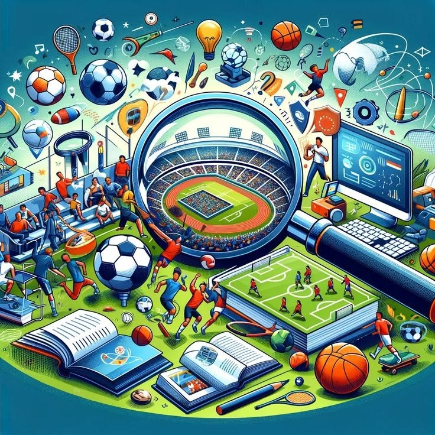

Bienvenido al Blog
Este blog es un espacio para compartir conocimientos, noticias y análisis sobre temas de actualidad en tecnología, videojuegos, inteligencia artificial, deportes y más. Nuestro objetivo es ofrecer contenido de calidad que informe y entretenga a nuestros lectores.
